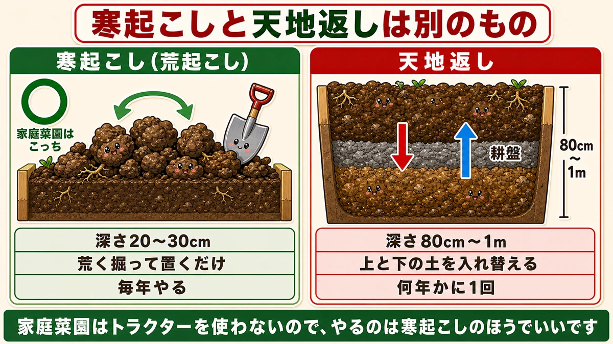
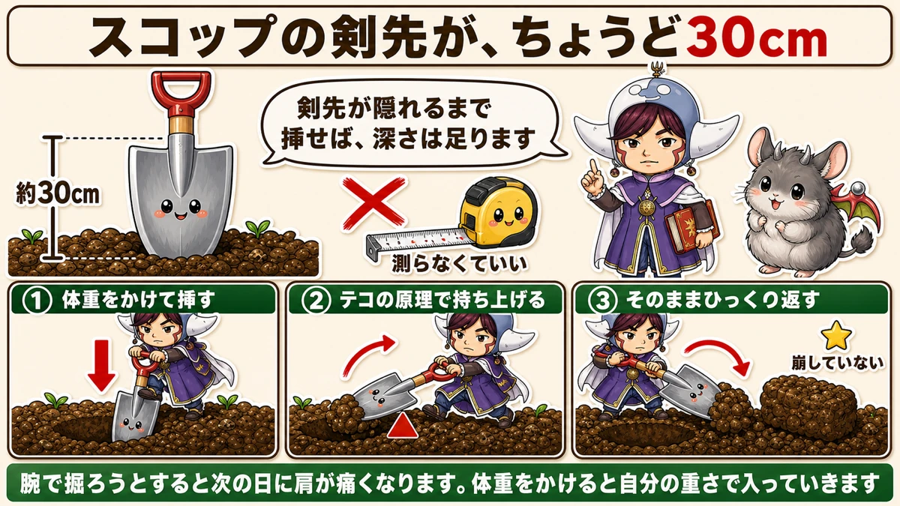
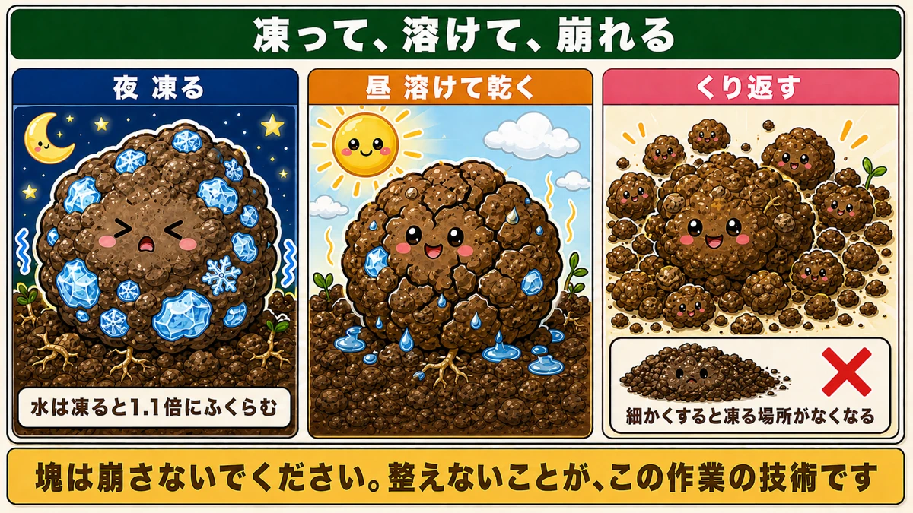
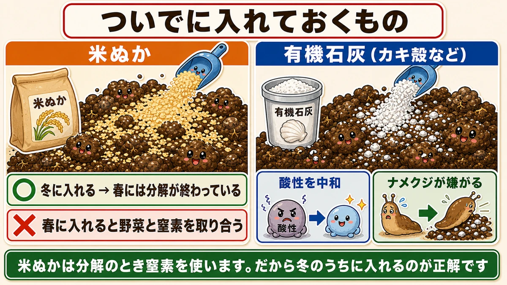

掘って、置いておくだけ⛄ 寒さは無農薬の畑でいちばん強い味方です

🗨️「冬の畑は、何もすることがない」
🗨️「土づくりって、肥料を入れることでしょ？」
🗨️「毎年おなじ場所で作ると、うまくいかなくなる」
どうも、8150（えいこう）です🌱 家庭菜園歴8年、理科の教員免許を持っていて、有機・無農薬で野菜を育てています。
今回は、1年でいちばん地味で、いちばん効く作業の話です。
先に、この記事でいちばん言いたいことを言っておきますね。
★掘って、置いておくだけです。
肥料も、機械も、技術も要りません。スコップ1本で、土を荒く掘り返して、そのまま放っておく。それだけで、春にはふかふかの土になっています。
しかも、土の中の害虫が死にます。
これを寒起こしと言います。そして★期限があります。2月が最後です☺️

📖 この記事の目次
寒起こしと天地返しは、別のもの
よく一緒に語られるけれど、中身が違う
冬の土づくりを調べると、この2つが並んで出てきます。作業が似ているので混同されがちですが、目的も深さも別ものです。
★寒起こし（荒起こし）
- 深さ20〜30cm
- 荒く掘り返して、そのまま置く
- 毎年やる
- 目的は、土をほぐすことと、害虫を殺すこと
★天地返し
- 深さ80cm〜1m
- 上のほうの土と、下のほうの土を入れ替える
- 何年かに1回
- 目的は、かたくなった層を壊すこと
家庭菜園でやるのは、寒起こしのほう
天地返しが必要になるのは、主に農家さんです。
トラクターで毎年同じ深さを耕していると、その刃が届く一番下のところに、押し固められた層ができます。これを耕盤と言います。かたい板のようになって、根が下へ伸びられなくなる。だから何年かに一度、深く掘って入れ替えるわけです。
家庭菜園ではトラクターを使いませんから、この層はできにくい。★だから、やるのは寒起こしのほうでいいです。
深さ80cmを人力で掘るのは、正直かなりつらい作業です。それをやらなくていいのは、家庭菜園のいいところだと思います。
やり方 ── スコップ1本、測らなくていい
★スコップの剣先が、ちょうど30cm
「20〜30cmの深さ」と言われても、いちいち測るのは面倒ですよね。
いい目安があります。
★スコップの剣先の長さは、だいたい30cmです。
つまり、★剣先が全部土に入るところまで挿せば、それで深さは足ります。メジャーは要りません。道具そのものが定規になっています。
これを知ってから、私の冬の作業はずいぶん気楽になりました。
手順は3つだけ
やることは単純です。
- スコップに体重をかけて、剣先が隠れるまで土に挿す
- 柄を手前に倒して、テコの原理で土を持ち上げる
- そのままひっくり返して、隣に置く
これを後ろに下がりながら繰り返します。畑の端から順に、一列ずつ。
力任せに押し込む必要はありません。★体重をかけると、スコップは自分の重さで入っていきます。腕で掘ろうとすると、次の日に肩が痛くなります。私は最初の年にこれをやりました。

★塊は、崩さない
ここがいちばん大事です。
掘り返した土は、ゴツゴツした大きな塊のまま置いてください。★きれいにならしてはいけません。
畑仕事をしていると、どうしても「整えたい」気持ちが出てきます。塊を鍬でたたいて細かくして、平らにしたくなる。
やらないでください。★塊のままのほうが、効きます。
理由は次の章でお話しします。
なぜ、ふかふかになるのか
土の中で、氷が育つ
ここからは理科の話です。
冬の畑では、こういうことが毎日起きています。
- 夜、気温が下がる。土の中の水分が★凍る
- 昼、日が当たる。氷が★溶けて、乾く
- また夜になって、凍る
このくり返しです。
水は、凍ると体積がふくらみます。だいたい1.1倍。液体なのに、固体になると大きくなる。水はとても珍しい性質を持っています。
つまり、★土の塊の中で氷が育って、内側から押し広げているんです。

これが何十回もくり返されると、塊はぼろぼろと崩れていきます。★人の手では作れない崩れ方です。鍬でたたいて砕いた土とは、粒の形が違います。
★だから細かく耕してはいけない
もうお分かりだと思います。
★細かく耕してしまうと、凍る場所がなくなるんです。
大きな塊は、表面積が大きい。外から冷えて、中に水を抱えていて、凍って、溶けて、また凍る。この回数が多いほど崩れます。
最初から細かくしてしまうと、この工程が起きません。せっかくの寒さが、働く場所を失います。
★「整えない」ことが、この作業の技術です。
わざと凍らせる、という手もある
もうひとつ、面白い方法があります。
★夕方に、掘り返した土に水をまく。
そうすると、その夜しっかり凍ります。雨の少ない冬でも、凍結の回数を増やせるわけです。私は寒波の予報が出た日の夕方にやっています。
翌朝、土の塊が白く霜をかぶっているのを見ると、うまくいっている感じがして気分がいいです。
害虫が死ぬ ── ★無農薬の核心
土の中で、虫は冬を越している
夏に野菜の根を食べていた虫たちは、冬のあいだ死んでいるわけではありません。
★土の中で、幼虫や卵のまま眠っています。
- ネキリムシ … 苗の株元をかじって切り倒す。朝、苗が倒れていたらこれ
- コガネムシの幼虫 … 根を食べる。プランターの土にもよくいる
暖かくなると出てきて、また同じことをします。毎年おなじ場所で同じ被害が出るのは、こういう理由です。
掘り出して、寒風にさらす
寒起こしをすると、土の下にいた彼らが★表面に出てきます。
そして、こうなります。
- 寒風にさらされて、凍死する
- 鳥が見つけて、食べる
私の畑では、寒起こしをした翌日はムクドリがよく来ています。掘り返した土をつついて回っているので、あれはごちそうなんだと思います。
★農薬を1滴も使わずに、土の中の害虫を減らせる。寒さは、無農薬の畑にとっていちばん強い味方です。
ついでに入れておくもの
★米ぬかは、冬のうちに
掘り返した塊の上に、★米ぬかをふりかけておいてください。
米ぬかは、土の中の微生物のごちそうです。分解が進むうちに、土がよくなっていきます。
ただし、ひとつ大事なことがあります。
★米ぬかは、分解のときに窒素を使います。
これを窒素飢餓と言います。分解している最中は、土の中の窒素が微生物に取られてしまう。そこに野菜を植えると、野菜のぶんの窒素が足りなくなります。
だから★冬のうちに入れるのが正解です。春までの2〜3か月で分解が終われば、植えるころには問題になりません。逆に、春に入れると野菜と取り合いになります。

有機石灰は、ナメクジ対策にもなる
もうひとつ、有機石灰（カキ殻石灰など）を入れておくといいです。
理由は2つあります。
- 雨が降るたび、土は少しずつ酸性に傾いていきます。石灰はこれを中和します
- ★ナメクジは酸性の土を好みます。中和しておくと、居心地が悪くなります
苦土石灰でも中和はできますが、有機石灰のほうがゆるやかに効くので、入れすぎの失敗が起きにくい。無農薬でやるなら、こちらをおすすめします。
こんなときは、どうする
プランターでもできる
畑がなくても、同じことができます。
プランターの土を、大きめの容器か新聞紙の上にあけて、塊のままベランダに置いておく。これだけです。
プランターの土は、1シーズン使うと粒がつぶれて、水はけが悪くなっています。冬のあいだ凍らせて崩してやると、粒が立ち直ります。私は毎年、使い終わったプランターの土をまとめて、日の当たらない北側のベランダに置いています。
★北側のほうがよく凍るので、こちらのほうが向いています。
まだ野菜が植わっている場所は
玉ねぎやにんにく、そら豆が植わっている場所は、当然そのままです。掘り返せません。
その場合は、★空いている場所だけやってください。畑を全部やる必要はありません。
私の畑では、冬に空いているのは夏野菜を片づけた場所です。そこだけ寒起こしをして、春にじゃがいもや夏野菜を植えます。玉ねぎの区画は、収穫が終わった6月以降に手を入れます。
毎年おなじ場所で不調が続くなら
同じ場所で同じ野菜を作り続けると、だんだんうまくいかなくなります。連作障害と呼ばれるものです。
原因はいくつかありますが、そのひとつが★土の中に特定の病原菌や害虫がたまっていくことです。
寒起こしは、この解決そのものにはなりません。ただ、★たまり方を減らすことはできます。掘り返して寒気にさらすたび、その年の分が少し減る。毎年の積み重ねが効いてきます。
期限は2月まで
3月に入ると、効かなくなる
この作業には★期限があります。
- 12月下旬〜2月 … ちょうどいい時期
- ★2月 … ラストチャンス
- 3月以降 … あまり意味がない
理由は簡単で、3月になると気温が上がって、凍らなくなるからです。凍結と融解が起きなければ、ただ土を掘り返しただけになります。
できなくても、来年がある
もし今年は間に合わなかったとしても、気にしないでください。
この作業のいいところは、★失敗しようがないことです。掘って、置く。それだけなので、やり方を間違えることがありません。
そして毎年やれる作業です。1年目より2年目、2年目より3年目のほうが、土は良くなっていきます。
この記事の要点
- ★寒起こしは掘って置くだけ。肥料も機械も要らない
- 寒起こし＝深さ★20〜30cm／天地返し＝深さ80cm〜1m。★家庭菜園は寒起こしでいい
- ★スコップの剣先が約30cm。剣先が隠れるまで挿せば深さは足りる
- 体重をかけて挿し、★テコの原理で持ち上げて裏返す
- ★塊は崩さない。細かくすると凍る場所がなくなる
- 夜に凍り、昼に溶ける。★水は凍ると1.1倍にふくらんで塊を内側から壊す
- ★夕方に水をまくと、わざと凍らせられる
- ★ネキリムシ・コガネムシの幼虫が表面に出て、凍死するか鳥に食べられる
- ★米ぬかは冬のうちに（春に入れると野菜と窒素を取り合う）
- 有機石灰は中和＋★ナメクジ対策
- ★期限は2月まで。3月は凍らないので効かない
全部やろうとしなくて大丈夫です。まずは畑の空いている一角だけ、スコップを1本挿してみてください。剣先が隠れたら、そこで持ち上げる。それだけで、今日の分は終わりです⛄
次回は、玉ねぎの話です。2月から3月にかけて、入れていい肥料と入れてはいけない肥料の話をします🧅
ここまで読んでくださって、ありがとうございました。
備中鍬
スコップで掘り起こしたあと、粗く砕くのに使います。三本爪なので土に刺さりやすく、テコの原理で持ち上げやすい。ただし細かく耕さないでください。塊のままのほうが、凍って溶けての回数が増えて効きます。
![[商品価格に関しましては、リンクが作成された時点と現時点で情報が変更されている場合がございます。]](https://hbb.afl.rakuten.co.jp/hgb/56d752c3.3ce6fd3b.56d752c4.f8896826/?me_id=1209220&item_id=10002030&pc=https%3A%2F%2Fthumbnail.image.rakuten.co.jp%2F%400_mall%2Fhonmamon-r%2Fcabinet%2Fimg3%2Fw4580149745643.jpg%3F_ex%3D240x240&s=240x240&t=picttext "[商品価格に関しましては、リンクが作成された時点と現時点で情報が変更されている場合がございます。]")

米ぬか
掘り返した塊の上にふりかけておきます。米ぬかは分解のときに窒素を使うので、冬のうちに入れるのが正解です。春に入れると野菜と窒素を取り合います。2〜3か月で分解が終われば、植えるころには問題になりません。
![[商品価格に関しましては、リンクが作成された時点と現時点で情報が変更されている場合がございます。]](https://hbb.afl.rakuten.co.jp/hgb/56d21cb1.eebb183f.56d21cb2.51de80a8/?me_id=1247635&item_id=10000021&pc=https%3A%2F%2Fthumbnail.image.rakuten.co.jp%2F%400_mall%2Feco-hiryo%2Fcabinet%2Fitem6%2Fset-1-a1.jpg%3F_ex%3D240x240&s=240x240&t=picttext "[商品価格に関しましては、リンクが作成された時点と現時点で情報が変更されている場合がございます。]")
カキ殻石灰（有機石灰）
雨が降るたび土は酸性に傾きます。石灰はこれを中和します。そしてナメクジは酸性の土を好むので、中和しておくと居心地が悪くなります。苦土石灰よりゆるやかに効くので、入れすぎの失敗が起きにくいです。
![[商品価格に関しましては、リンクが作成された時点と現時点で情報が変更されている場合がございます。]](https://hbb.afl.rakuten.co.jp/hgb/56d21b6a.c19127f6.56d21b6b.c5473e84/?me_id=1258048&item_id=10000067&pc=https%3A%2F%2Fthumbnail.image.rakuten.co.jp%2F%400_mall%2Fkaneashop%2Fcabinet%2F12084383%2F12419790%2Fimgrc0108924525.jpg%3F_ex%3D240x240&s=240x240&t=picttext "[商品価格に関しましては、リンクが作成された時点と現時点で情報が変更されている場合がございます。]")
あわせて読みたい